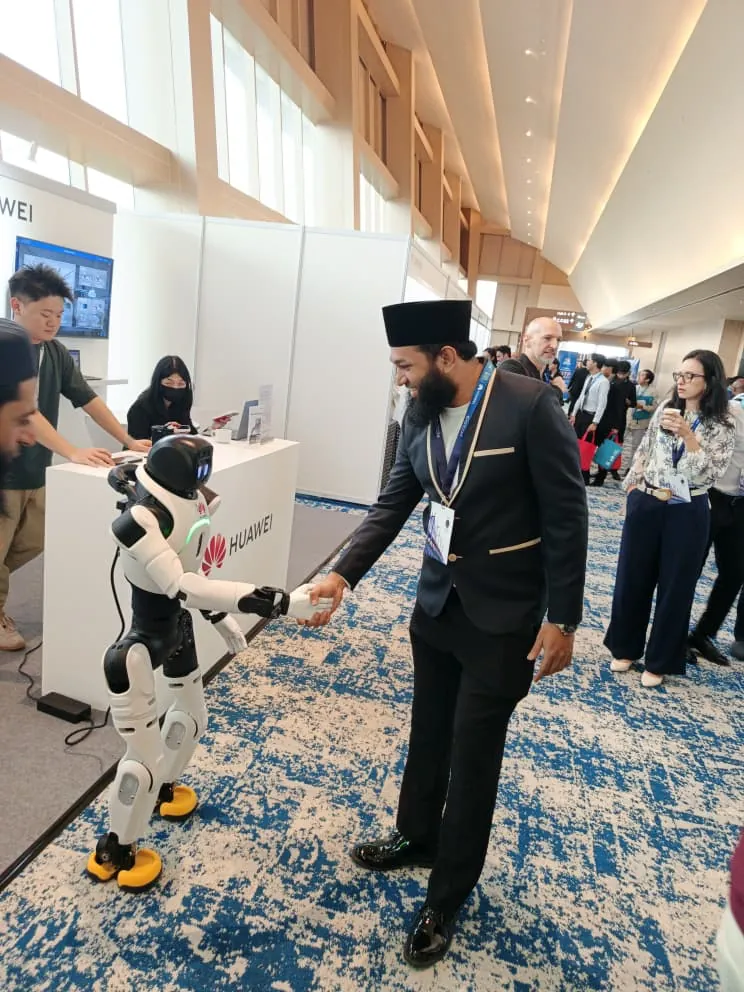

Reliable AI for DAS
Robust microseismic classification, transfer across sites, and explanations grounded in waveform evidence.
Research & methods →I build trustworthy AI for subsurface sensing, from peer-reviewed microseismic research to production systems.
At UTP, I study robust learning from distributed acoustic sensing signals and evidence-aware AI explanations. As CTO of T3 IT Solutions and Al Hamra Group since June 2026, I also work on practical AI delivery.

Robust microseismic classification, transfer across sites, and explanations grounded in waveform evidence.
Research & methods →Predictive models for total organic carbon, well placement, CO₂ storage, and hydropower optimization.
Selected papers →Agentic RAG, document verification, semantic search, and measured improvements in deployed workflows.
Industry work →Engineering Applications of Artificial Intelligence 181, 115622
A comparative evaluation of twelve deep-learning architectures for classifying candidate windows from distributed acoustic sensing data in an enhanced geothermal setting.
International Journal of Intelligent Engineering and Systems 18(8), 842–860
3 citations · Google Scholar, Sept 2026
A hybrid convolution-transformer architecture for distinguishing microseismic signals from blasting and noise.
Journal of Materials Research and Technology 12, 1010–1025
95 citations · Google Scholar, Sept 2026
Machine learning and response surface methodology are used to model and optimize the microhardness of an electroless Ni-P-TiO2 composite coating.
International Journal of Innovative Computing, Information and Control 17(3), 807–829
5 citations · Google Scholar, Sept 2026
An evaluation of tree-based ensemble learning for estimating total organic carbon from wireline logs.